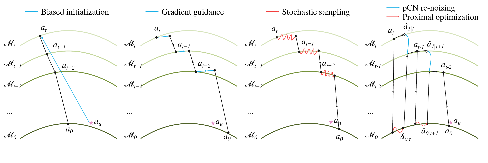

Endpoint-Proximal Stochastic Steering
for Robotic Manipulation with Flow-Matching
Policies
Abstract
Flow-based visuomotor policies have emerged as a promising paradigm for modeling multimodal robot action distributions. However, real-world deployments often introduce task-specific constraints and user preferences that are not considered during training, while collecting additional demonstrations or fine-tuning pretrained policies can be costly. To address this need, we propose Endpoint-Proximal Stochastic Steering (EPSS), a training-free method for guiding pretrained flow-based visuomotor policies at inference time. At each sampling step, EPSS estimates the clean action and noise endpoints from the pretrained policy, enabling guidance to be applied directly in the predicted action space. Building on this representation, an adaptive proximal update based on the Huber loss balances alignment with target actions and the pretrained policy's predictions. Furthermore, pCN re-noising refreshes the noise endpoint to support exploration of alternative action candidates. We evaluate EPSS on a range of challenging simulated and real-world tasks. Experimental results demonstrate that EPSS consistently outperforms existing inference-time steering methods and improves task success rates across multiple tasks while alignment with target actions.
Overview

Steering Mechanisms

SIX SIMULATED TASKS
Simulation Rollouts
Maze2D
Navigate around obstacles while following a reference trajectory.
PHYSICAL ROBOT
Real Robot: Cup Place
Each video compares unguided and EPSS-guided predictions in the same scene, then shows the guided execution.
Experimental Results
EPSS achieves the highest mean success rate on all five manipulation tasks.
| Method | Push Block | Cup Place | Pick Place | Drawer Open | Peg Insert Side |
|---|---|---|---|---|---|
| Base Policy | 78.50 ± 8.83 | 72.00 ± 7.52 | 88.00 ± 4.21 | 95.50 ± 4.97 | 19.00 ± 6.58 |
| BI | 82.50 ± 6.77 | 79.00 ± 7.00 | 87.50 ± 5.40 | 93.00 ± 4.83 | 60.00 ± 12.24 |
| ITPS (GD) | 82.50 ± 5.40 | 68.50 ± 8.83 | 85.50 ± 5.99 | 85.50 ± 5.27 | 82.00 ± 2.58 |
| ITPS (SS) | 84.50 ± 8.31 | 83.00 ± 7.89 | 90.00 ± 4.08 | 86.50 ± 5.80 | 79.00 ± 4.59 |
| EPSS | 91.00 ± 6.58 | 88.00 ± 4.22 | 92.50 ± 3.53 | 97.00 ± 4.21 | 88.50 ± 4.74 |
Multimodal guidance
| Method | Maze2D Avg ℓ₂ ↓ | Maze2D CR (%) ↓ | Push Block Alignment (%) ↑ | Cup Place Alignment (%) ↑ |
|---|---|---|---|---|
| BI | 1.273 | 0.88 | 78.50 ± 6.69 | 85.00 ± 4.08 |
| ITPS (GD) | 1.159 | 15.98 | 96.50 ± 4.11 | 94.50 ± 4.38 |
| ITPS (SS) | 0.844 | 6.06 | 93.50 ± 5.30 | 94.00 ± 4.59 |
| EPSS | 1.121 | 0.33 | 98.50 ± 3.37 | 98.50 ± 2.42 |
Lower Avg ℓ₂ indicates closer reference following; lower CR indicates fewer collisions.
Real-world Cup Place
| Method | Success ↑ | Alignment (%) ↑ |
|---|---|---|
| Base Policy | 40/60 (66.7%) | — |
| BI | 47/60 (78.3%) | 70.00 |
| EPSS | 52/60 (86.7%) | 95.00 |